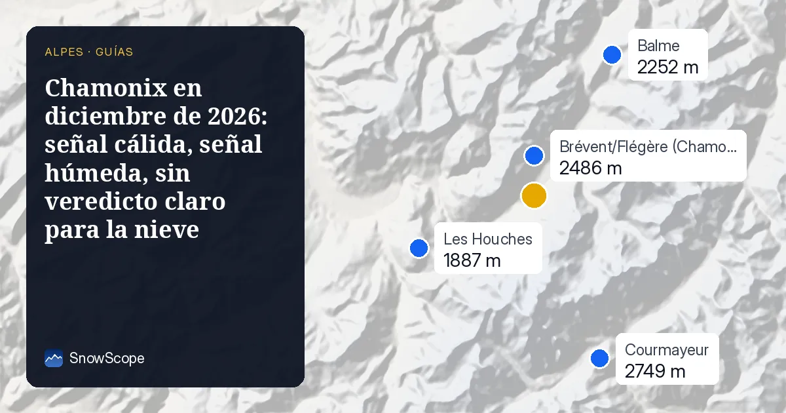

Chamonix en diciembre de 2026: señal cálida, señal húmeda, sin veredicto claro para la nieve
Los picos altos de Chamonix despertaron con 27 cm el 10 de noviembre, pero la estación de media montaña apenas tiene 1 cm y la base está desnuda. El pronóstico estacional de diciembre se inclina hacia el calor y ligeramente húmedo, pero estas dos fuerzas casi se anulan mutuamente—el mes debería mantenerse cerca de su total de nieve habitual.
Consulta la previsión de nieve en tiempo real de Chamonix en la app SnowScopeEspesor de nieve, alertas de nieve polvo y mapa 3D, gratis.

La altitud decide el cuadro ahora
La nieve de principios de noviembre se adhiere solo donde hace frío. La cima de Grands Montets a 2768 m tiene 27 cm después de que cayeron 15 cm la semana anterior. Desciende 800 metros a media montaña (2001 m) y encuentras solo 1 cm, a pesar de que llegaron 10 cm en los mismos siete días. La base a 1234 m no muestra nada.
Esta es la historia de una línea de nieve alta. En el mapa de SnowScope, el 47 por ciento de la ventana de 60 km alrededor de Chamonix está blanco—el macizo de Mont Blanc y el lado alto del Valais—pero los valles permanecen desnudos. Los próximos siete días podrían añadir otros 26 cm a la zona alta y 5 cm a media montaña.
Sin patrón claro en las montañas todavía
Cuando SnowScope compara cada parche de montaña con sus propios últimos 24 diciembres, la mayoría de las áreas alrededor de Mont Blanc no muestran una señal fuerte. El 86 por ciento del terreno carece de una tendencia clara. El 14 por ciento se inclina hacia lo escaso (principalmente Pre-Alpes bajos cerca de Annecy), y ningún lugar destaca como naturalmente más nevado.
A altura de media montaña, la probabilidad de más nieve fresca que en un diciembre típico es del 45 por ciento. Un diciembre normal trae 68 cm de nieve nueva allí; la perspectiva de este año sugiere 66 cm. Al 31 de diciembre, la profundidad típica es 92 cm y la profundidad pronosticada 85 cm, muy probablemente entre 71 y 103 cm.

Calor y humedad en un tira y afloja
Las 51 ejecuciones del sistema estacional europeo se ponen de acuerdo fuertemente en una cosa: diciembre será cálido. El calentamiento promedio en toda la región es 1,6 °C por encima de lo normal, con el 84 por ciento de las ejecuciones más cálidas. La precipitación es el 11 por ciento más húmeda que los 128 mm habituales, favorecida por el 65 por ciento del conjunto.
Estas señales tiran en direcciones diferentes. La altitud mantiene la precipitación como nieve; las elevaciones más bajas pagan el precio de un mes más cálido en forma de lluvia y una línea de nieve ascendente. En los últimos 45 diciembres de Chamonix, la profundidad de nieve aquí ha seguido la precipitación mucho más estrechamente (correlación 0,94) que la temperatura, por lo que el pronóstico se mantiene cerca de lo normal—los dos efectos se anulan principalmente.


Tres diciembres que se sintieron así
Los tres diciembres pasados cuyo clima más se asemejaba a este pronóstico son 2002, 2022 y 2014. Pero esos tres no fueron similares para nieve. Esa honestidad es importante: el pronóstico inclina las probabilidades solo ligeramente; no cierra el resultado del mes.
La lección clave es la variabilidad. Los años cálidos no siempre significan nieve escasa una vez que se tiene en cuenta la humedad. Planifica primero en el terreno alto—la cima de Grands Montets y los accesos al glaciar—y trata las pistas más bajas como un bonus. Consulta el pronóstico de 7 días antes de decidir viajar.

Qué vigilar en las próximas semanas
Principios de diciembre está en equilibrio. La cobertura fina en media montaña podría consolidarse, o el calor de diciembre podría empujar la línea de lluvia más alta. La diferencia entre un mes bueno y uno escaso puede depender de si diciembre se inclina más hacia el calor o la humedad en su primer quincena.
Usa el mapa de SnowScope para rastrear la línea de nieve mientras evoluciona el pronóstico de 7 días. Esa capa te dirá más sobre qué pistas del valle son esquiables que lo que cualquier pronóstico estacional único pueda.
Consejos para esquiadores
- Comienza tus días de diciembre en la cima de Grands Montets y el terreno del glaciar; la altitud alta aseguran las mejores probabilidades de nieve.
- Vigila de cerca el pronóstico de 7 días para cambios en la línea de lluvia. Una ola de calor a mediados de mes podría empujar la lluvia más alta y reducir la cobertura de media montaña.
- La perspectiva abarca de 71 a 103 cm a fin de mes en media montaña; usa la parte inferior de ese rango para planificar de forma conservadora al principio, la parte superior a medida que se desarrolla.
- Antes de reservar finales de diciembre, compara el pronóstico de 7 días en ese momento con esta perspectiva estacional. Los pronósticos estacionales son guías, no garantías.
- Superpón el mapa de profundidad de nieve de SnowScope cada semana para ver dónde se establece la línea de nieve mientras diciembre avanza.
Sobre estas cifras
Los espesores de nieve de las estaciones son la nieve más profunda en las pistas altas en la fecha indicada; son estimaciones para una zona, no una medida en un punto. Las previsiones pueden cambiar. Consulta siempre el boletín oficial de aludes antes de salir fuera de pista.
Citar este informe
Para investigación, docencia o prensa: cifras y gráficos reutilizables libremente bajo CC BY 4.0 con esta cita.
SnowScope (2026), Chamonix en diciembre de 2026: señal cálida, señal húmeda, sin veredicto claro para la nieve, https://snowscope.app/blog/es/2026/11/chamonix-december-2026-snow-outlook.html, consultado el 2026-11-10
SnowScope (Atlas Labs). (2026, November 10). Chamonix en diciembre de 2026: señal cálida, señal húmeda, sin veredicto claro para la nieve. SnowScope snow reports. https://snowscope.app/blog/es/2026/11/chamonix-december-2026-snow-outlook.html
BibTeX
@misc{snowscope2026chamonixdecember2026snow,
author = {{SnowScope (Atlas Labs)}},
title = {Chamonix en diciembre de 2026: señal cálida, señal húmeda, sin veredicto claro para la nieve},
year = {2026},
month = nov,
howpublished = {\url{https://snowscope.app/blog/es/2026/11/chamonix-december-2026-snow-outlook.html}},
note = {Published 2026-11-10 09:29 UTC; accessed 2026-11-10}
}· CC BY 4.0 · Métodos, datos y herramientas →
Sigue Chamonix
Gratis: un aviso cuando llega la nieve y la previsión cada mañana.
Más partes de nieve

Cuándo reservar Courchevel y las 3 Vallées, qué pueblo elegir y dónde dura la nieve, a partir de 46 inviernos pasados.

Retrato de Bonneval-sur-Arc en la Alta Maurienne: tejados de piedra, un puerto cerrado, un pequeño dominio y una nieve sorprendentemente gruesa, según 46 inviernos pasados.

La Sella Ronda desde Sëlva en Val Gardena: puertos de Gardena, Campolongo, Pordoi y Sella en orden, con nuestro histórico de nieve de 46 inviernos pasados.